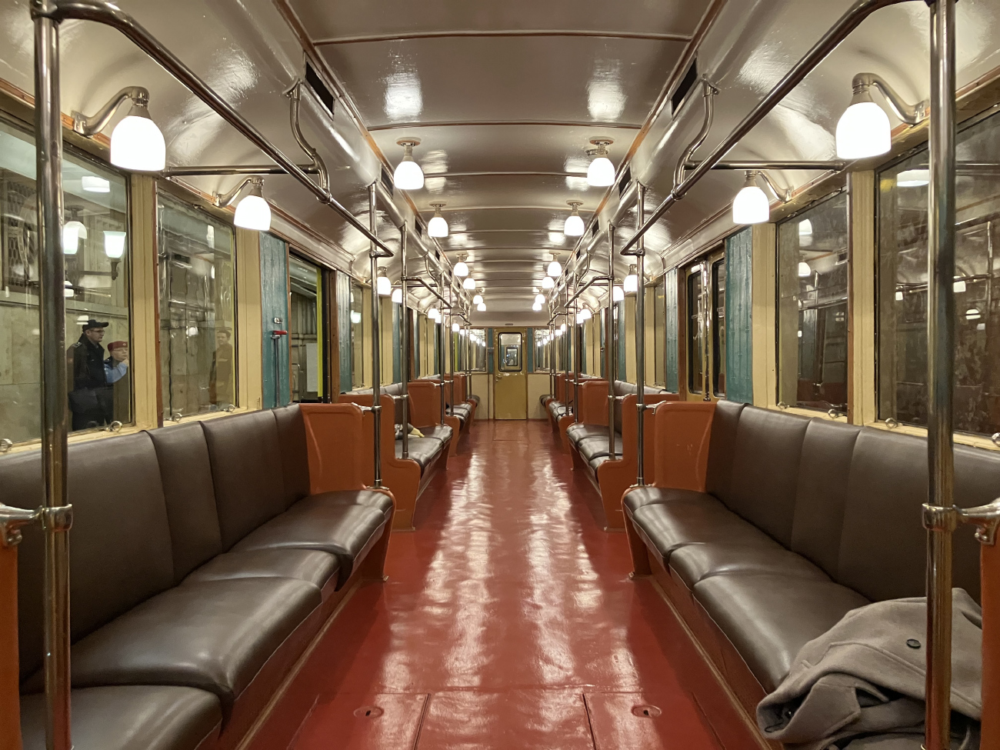
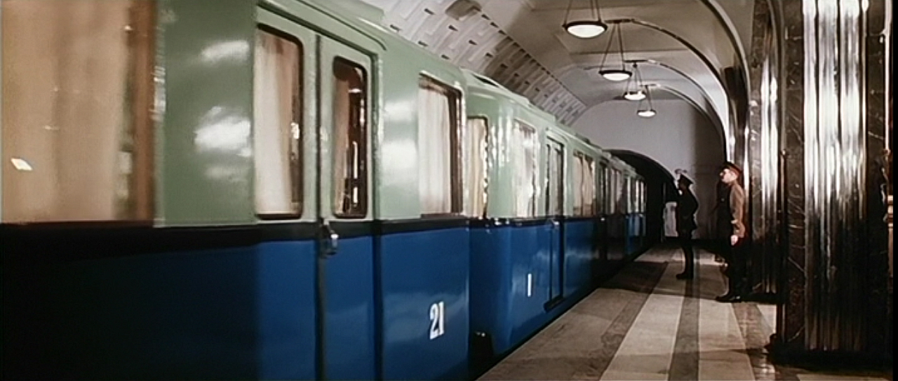
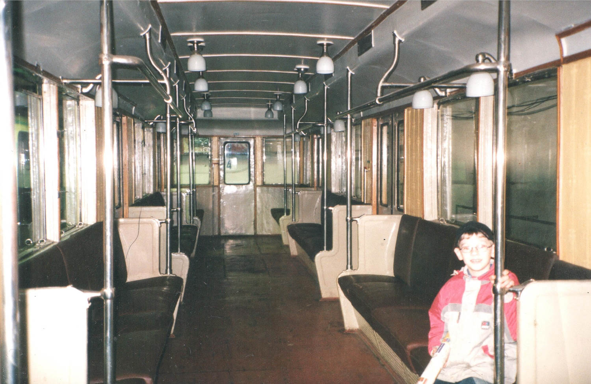
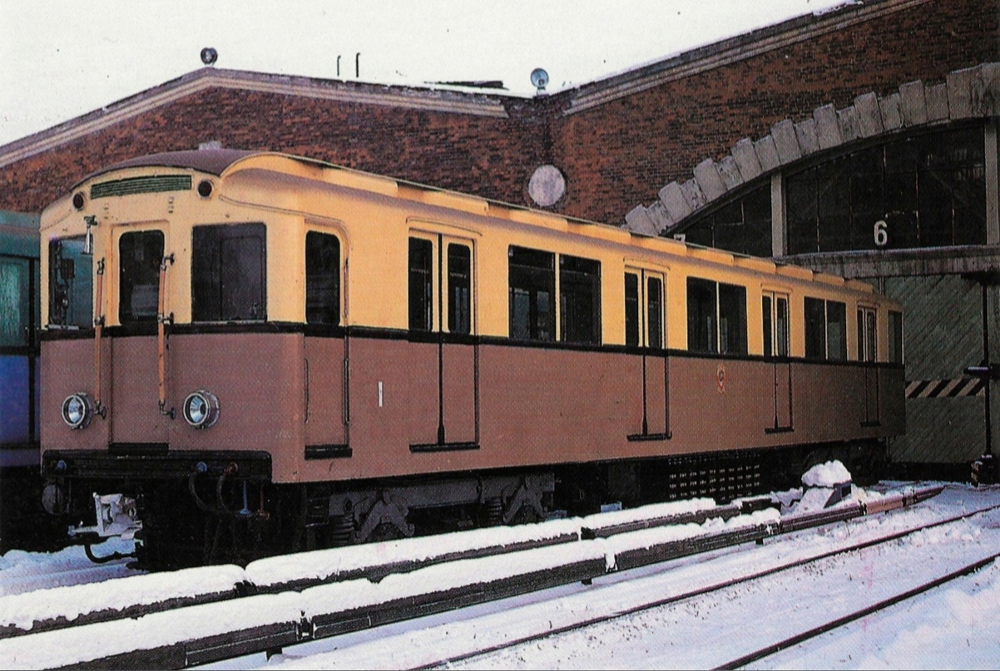

А 1-1031-21
Музейный состав Московского метрополитена, в который входит вагон №1 — самый первый вагон метро, построенный в 1934 году. Сегодня это единственный сохранившийся экземпляр вагона типа А в оригинальном исполнении.
Состав поезда
1 — 1031 — 21
Вагон № 1
- Модель: Ам
- Построен: 10.1934
- История: Экспериментальная секция 1-1001, в пассажирскую эксплуатацию не поступала. В 1975 году снята с пассажирской эксплуатации, в 1977 списана. С 05.2015 — отреставрирована и восстановлена на баланс как музейная.
Вагон № 1031
- Модель: А прицепной
- Построен: 1935
- История: С 1935 года в депо ТЧ-1 «Северное». 24.02.1960 переделан в вагон-дефектоскоп. С 11.2010 — на балансе как музейный. В 05.2015 отреставрирован.
Вагон № 21
- Модель: Ам
- Построен: 1935
- История: С 1935 года в депо ТЧ-1 «Северное». 26.12.1968 переделан в путеизмеритель. 2012—2016 — у частного лица в районе станции Угрешская. С 2017 — отреставрирован, зачислен на баланс как музейный.
К сожалению: К составу мог присоединиться вагон №1001 (из Баку), но сделка сорвалась.
История состава
Постройка секции 1-1001
Точная дата постройки экспериментальной секции. В пассажирскую эксплуатацию не поступала.
Поступление вагона №1
Вагон №1 поступил в депо приписки ТЧ-1 «Северное».
Постройка вагонов №1031 и №21
Оба вагона построены в 1935 году и поступили в ТЧ-1 «Северное».
Перевод вагона №1 в ТЧ-2 «Сокол»
Вагон №1 переведён в депо «Сокол», где проработал до 06.1954.
Перевод в ТЧ-3 «Измайлово»
Вагон №1 переведён в ТЧ-3 «Измайлово», где работал до 1975 года.
Снятие с пассажирской эксплуатации
Вагон №1 снят с пассажирской эксплуатации, а в 1977 — списан.
Вагон №1031 — дефектоскоп
Вагон №1031 переделан в вагон-дефектоскоп, работал в ТЧ-2 «Сокол» и ТЧ-4 «Красная Пресня».
Вагон №21 — путеизмеритель
Вагон №21 переделан в путеизмеритель, работал в Дистанции капитального ремонта пути.
Участие в кино
Состав участвовал в съёмках киноэпопеи «Битва за Москву».
Вагон №1031 — музейный
Вагон №1031 зачислен на баланс как музейный.
Вагон №21 — у частного лица
Вагон №21 находился у частного лица в районе станции Угрешская.
Реставрация состава
Вагоны №1 и №1031 отреставрированы и восстановлены на баланс как музейные.
Вагон №21 — музейный
Вагон №21 отреставрирован и зачислен на баланс как музейный.
Формирование состава 1-1031-21
Окончательное формирование музейного состава в нынешнем виде.
Исторические расцветки
За свою долгую историю состав имел три различные расцветки:
Голубо-синяя
Одна из первых окрасок вагонов типа А.
Жёлтый и охра
Тёплая цветовая гамма, использовавшаяся в послевоенный период.
Жёлто-зелёный
Оригинальная расцветка некоторых вагонов типа А.
Где можно увидеть состав
Сегодня состав приписан к Народному музею Московского метрополитена. Его можно увидеть на следующих мероприятиях:
🚇 Экскурсия в ТЧ-3
Регулярные экскурсии в депо «Измайлово», где можно увидеть состав вживую.
🌙 Ночная экскурсия
Специальные ночные экскурсии по Московскому метро с участием ретро-поезда.
🎉 Реконструкция запуска
Праздничные мероприятия, посвящённые открытию Московского метро (15 мая).
Следите за расписанием экскурсий на официальном сайте Московского метрополитена.
Связь с опытной Ашкой
Этот музейный состав 1 — 1031 — 21 напрямую связан с самым первым опытным поездом Московского метро — вагонами №1 и №1001 1934 года постройки.
🚆 Общее происхождение
- Оба состава — вагоны типа А
- Построены на Мытищинском вагоностроительном заводе (МВЗ)
- Вагон №1 (из опытного поезда) сегодня входит в состав 1 — 1031 — 21
- Вагон №1001 (из опытного поезда) находится в Баку
🔬 Опытная Ашка
- Первый опытный поезд: №1 + №1001
- Построен в 1934 году для испытаний
- После испытаний расформирован
- Вагон №1 в Москве, вагон №1001 в Баку
Уникальный случай: Опытный состав сохранился, пусть и в разных городах. Вагон №1 — в Москве, вагон №1001 — в Баку.
Фотогалерея

На экскурсии.

Внутреннее убранство.

«Битва за Москву».

Внутреннее убранство в 2006 году.

Историческое фото.
Нажмите на фото для увеличения
«Вагон №1 — это не просто музейный экспонат, это живая история. Именно с него началось движение в Московском метро 15 мая 1935 года. И сегодня каждый желающий может увидеть этот легендарный вагон и даже прокатиться на нём во время праздничных рейсов».